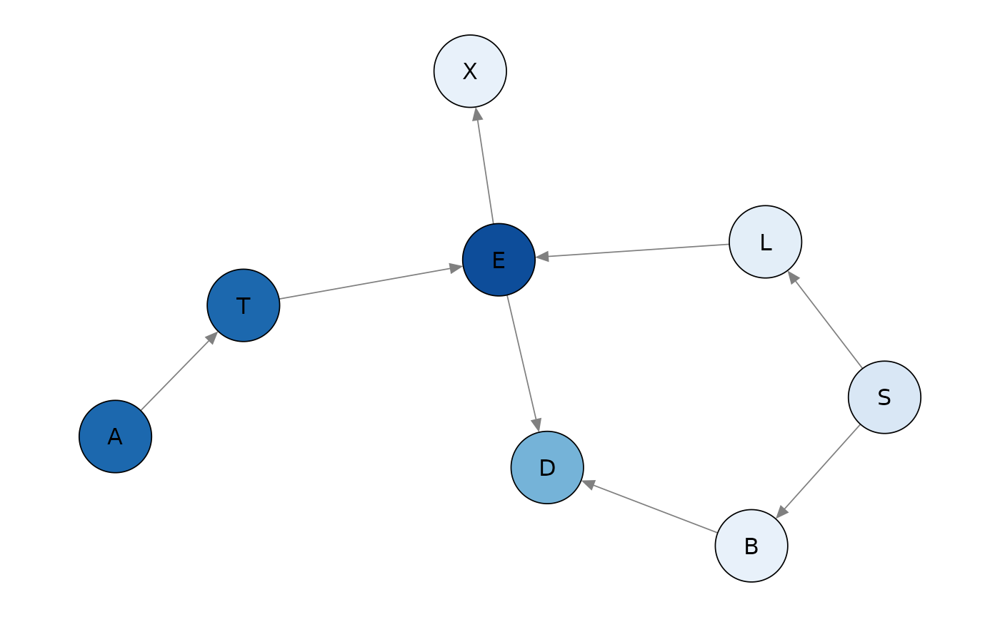
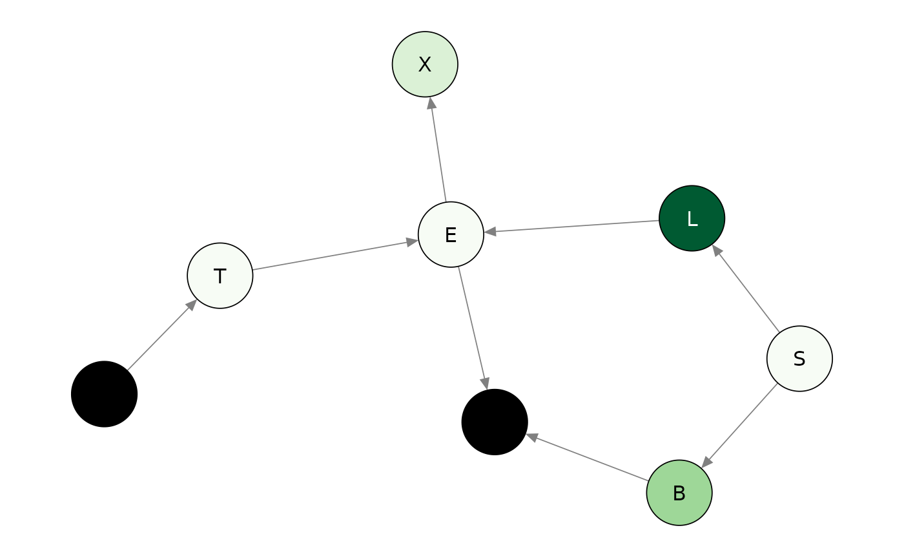

Robustness to Data
Robustness.RmdConsider the asia dataset available from bnlearn. Details of the variables can be found in the bnlearn documentation.
library(bnlearn)
data(asia)
summary(asia)
#> A S T L B E X
#> no :4958 no :2485 no :4956 no :4670 no :2451 no :4630 no :4431
#> yes: 42 yes:2515 yes: 44 yes: 330 yes:2549 yes: 370 yes: 569
#> D
#> no :2650
#> yes:2350Consider two candidate BN models (Lauritzen and Spiegelhalter, 1988), which only differ in the edge from S to D.
asia_bn <- bnlearn::model2network("[A][S][T|A][L|S][B|S][D|B:E][E|T:L][X|E]")
bnlearn::graphviz.plot(asia_bn)
#> Loading required namespace: Rgraphviz
asia_bn_alt <- bnlearn::model2network("[A][S][T|A][L|S][B|S][E|T:L][X|E][D|B:E:S]")
bnlearn::graphviz.plot(asia_bn_alt) Global monitor
A first useful diagnostic is the global_monitor, reporting the contribution of each vertex to the log-likelihood of the model.
library(bnmonitor)
glob_asia <- node_monitor(dag = asia_bn, df = asia, alpha = 3)
glob_asia_alt <- node_monitor(dag = asia_bn_alt, df = asia, alpha = 3)
glob_asia
#> Vertex Score
#> 1 A 249.74568
#> 2 B 3020.72273
#> 3 D 2144.16059
#> 4 E 26.31263
#> 5 L 1101.55381
#> 6 S 3469.43743
#> 7 T 260.38452
#> 8 X 851.22579
glob_asia_alt
#> Vertex Score
#> 1 A 249.74568
#> 2 B 3020.72273
#> 3 D 2153.19484
#> 4 E 26.31263
#> 5 L 1101.55381
#> 6 S 3469.43743
#> 7 T 260.38452
#> 8 X 851.22579In the alternative model, Dysnopea contributes more to the log-likelihood.
Global monitors can be plotted giving a quick view of the decomposition of the log-likelihood. The darker the color, the more substantial the contribution of a vertex.
plot(glob_asia)
Node monitor
There are two variants of node monitors.
The marginal node monitor computes the probability of the \(i\)th observation in the data set in turn after passing the evidence of the \(i-1\)th cases in the data set.
The conditional node monitor computes the probability of the \(i\)th observation in the data set after passing evidence of the \(i-1\)th cases in the data set, and the evidence for all nodes in the \(i\)th case except the node of interest.
As a quick survey of the nodes, the node_monitor command computes the marginal and conditional monitors for the final observation in the data set.
node_asia <- final_node_monitor(dag = asia_bn, df = asia)
node_asia
#> node marg.z.score cond.z.score
#> 1 A -0.1029759 -0.1029862
#> 2 S -114.8350581 -118.7946397
#> 3 T -0.1054182 -0.1054288
#> 4 L -0.3013303 -0.3013649
#> 5 B -34.6833789 -35.0407002
#> 6 E -0.3226028 -0.3226405
#> 7 X -0.4234203 -0.4234785
#> 8 D -10.4048397 -10.3678671The scores indicate a poor fit of the probability distributions specified for the Smoking, Bronchitis, and Dysnopea nodes, since these are larger than 1.96 in absolute value. Plots can also be created to give a visual counterpart of the node monitors.
plot(node_asia, which = "marginal")
As an illustration we investigate further the fit of the variable Dysnopea.
The sequential marginal monitor seq_marg_monitor gives us a closer look at which particular forecasts in the data set might cause this poor fit. We examine the sequential monitor for both candidate models.
seq_asia <- seq_marg_monitor(dag = asia_bn, df = asia, node.name = "D")
seq_asia_alt <- seq_marg_monitor(dag = asia_bn_alt, df = asia, node.name = "D")
seq_asia
#> Marginal Node Monitor for D
#> Minimum -2.182895
#> Maximum 0.446613
seq_asia_alt
#> Marginal Node Monitor for D
#> Minimum -2.408245
#> Maximum 0.1543135
library(gridExtra)
grid.arrange(plot(seq_asia),plot(seq_asia_alt),ncol=2)
Both monitors indicate that for some observations there is a poor fit (score above 1.96 in absolute value). In particular for the alternative models the marginal monitor has larger values in absolute value.
A similar analysis can be conducted with seq_marg_monitor, which would show that the model fits well (not reported here).
Parent Child monitor
Once a vertex has been identified as a poor fit, further investigation can be carried out to check for which values of the parents the model provides a bad representation. This can be achieved with the seq_pa_ch_monitor function.
As an illustration consider the asia_bn BN, the vertex D (Dysnopea), the parent variable B (Bronchitis) which can take values yes and no.
asia_pa_ch1 <- seq_pa_ch_monitor(dag = asia_bn, df = asia, node.name = "D", pa.names = "B", pa.val = "yes", alpha = 3)
asia_pa_ch1
#> Parent Child Node Monitor
#> Minimum -1.674971
#> Maximum 2.158953
asia_pa_ch2 <- seq_pa_ch_monitor(dag = asia_bn, df = asia, node.name = "D", pa.names = "B", pa.val = "no", alpha = 3)
asia_pa_ch2
#> Parent Child Node Monitor
#> Minimum -1.911069
#> Maximum 1.629946
grid.arrange(plot(asia_pa_ch1),plot(asia_pa_ch2), ncol = 2)
For this model, Dysnopea is adequately modeled for both values of Bronchitis, since most scores largely fall in the recommended range.
Influential observations
The last robustness tool is the absolute value of the log-likelihood ratio between a model learnt without one observation and the one learnt with the full dataset. Larger values are associated to atomic events which influence the structural learning.
influence <- influential_obs(dag = asia_bn, df = asia, alpha = 3)
head(influence)
#> A S T L B E X D score
#> 1 no yes no no yes no no yes 1.448996
#> 2 no yes no no no no no no 2.246368
#> 3 no no yes no no yes yes yes 6.218600
#> 4 no no no no yes no no yes 2.223474
#> 5 no no no no no no no yes 3.435658
#> 6 no yes no no no no no yes 4.443592
plot(influence)